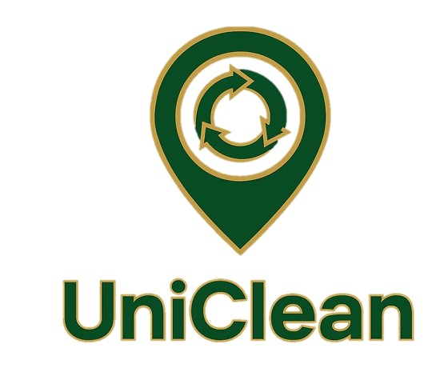

SPOTTED
Photo + GPS + description posted publicly.

UniCleanUniClean is a global social platform where anyone can report environmental pollution, anyone capable can claim the cleanup, and the whole world watches it get resolved — one post at a time.
Post a Report View Global MapIt starts as a problem. It ends as a resolution. The community witnesses both.
Photo + GPS + description posted publicly.
A responder steps forward. Their name is on the line.
Work happening. Community watching. Updates posted.
After-photos confirm cleanup. Permanent record.
Escalated publicly. Social pressure drives action.
reports from Manzini and Ilorin as we prepare to onboard real users.
Large accumulation of plastic waste and household rubbish blocking the main storm drain on Bypass Road. Risk of flooding during rains.
Claimed by Manzini City Council.
Overflowing waste bins near the Faculty of Engineering, University of Ilorin. Bins have not been collected in over two weeks.
Claimed by UniIlorin Green Society.
Industrial discharge and plastic waste visible in the Lusushwana River near Ngwane Park. Strong odour and discoloured water.
Currently unclaimed.
Electronic waste being openly burned in a vacant lot, producing toxic smoke affecting nearby residential areas.
Claimed by Globally Green Nigeria.
Significant erosion combined with dumped construction waste on the hillside path near Malkerns junction. Path is becoming unusable.
Currently unclaimed.
Heavy accumulation of plastic bags and bottles along the Asa River bank near Tanke. Community children play here daily.
Claimed by UniIlorin Green Society.